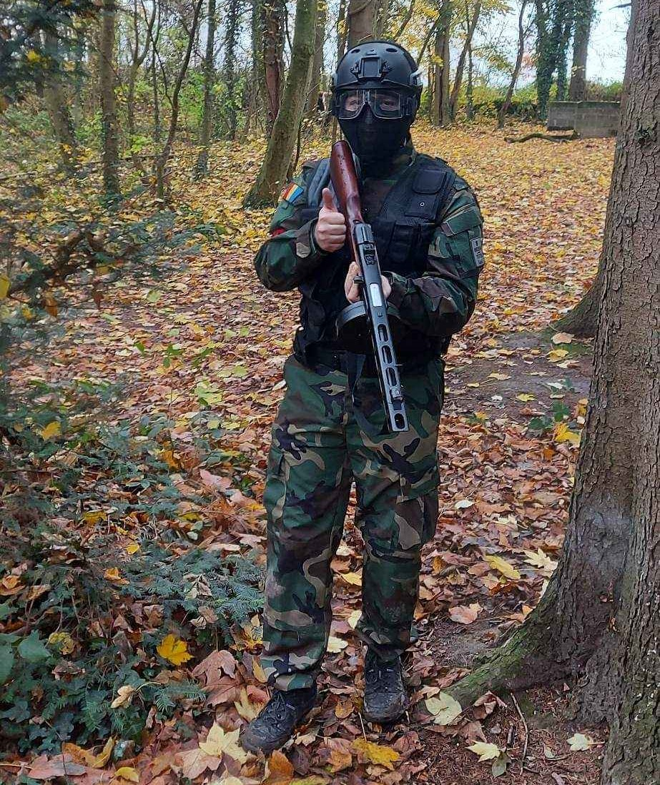
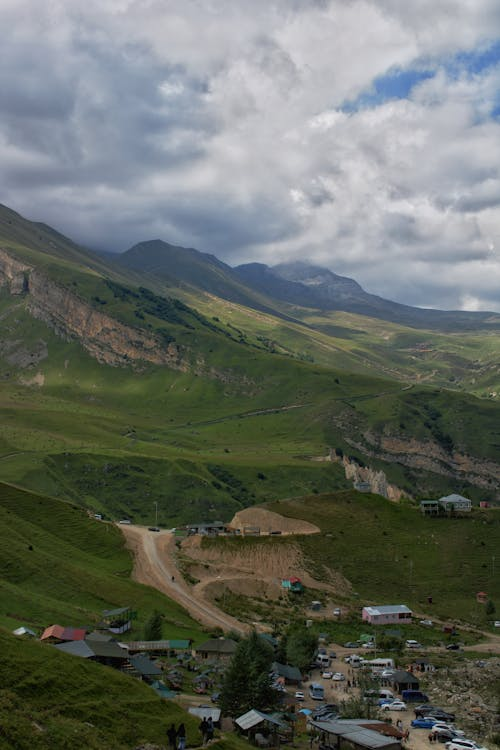
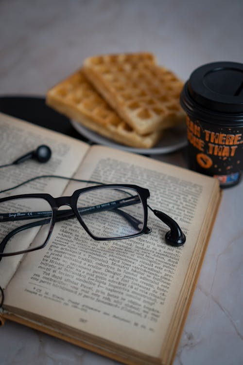
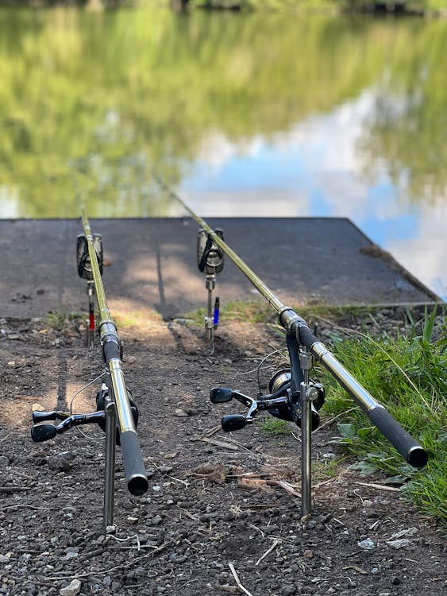
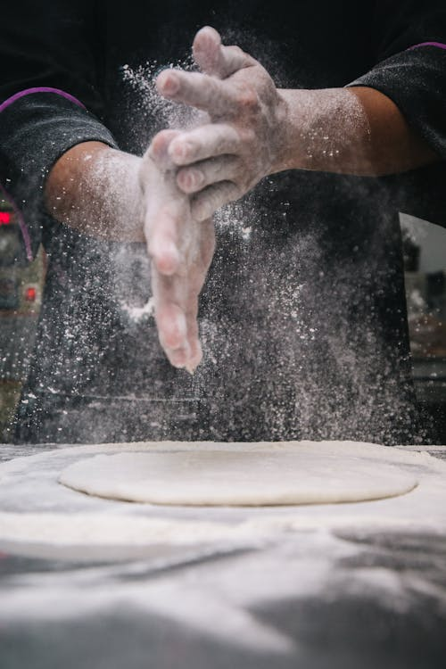

Hieronder vind je een verzameling van foto's die mijn Hobby's laten zien.
Wing Chun Kung Fu - Beoefen ik sinds 2015. Deze zelfverdedigingskunst heeft me veel geleerd over discipline en focus.

Airsoft - Regelmatig doe ik aan airsoft. Het strategische aspect en teamwork geven me een echte adrenalineboost.

Wandelen in de Natuur - Geeft me rust en helpt me te ontsnappen aan het dagelijks leven.

Lezen - Een favoriete bezigheid. Ik geniet van het ontdekken van nieuwe kennis en ideeën.

Al sinds mijn vierde ben ik gepassioneerd door vissen, zowel op zoet als zout water. Deze liefde voor vissen heb ik van mijn vader geleerd,
die me de technieken en geduld heeft bijgebracht om van elke viservaring een avontuur te maken.
Het is niet alleen een hobby, maar ook een speciale band die ik met hem deel.

Sinds mijn achtste sta ik al in de keuken, waar ik de fijne kneepjes van het koken leerde van mijn moeder.
Haar passie en kennis hebben me geïnspireerd, en sindsdien is koken voor mij een echte hobby en een manier om herinneringen te koesteren.